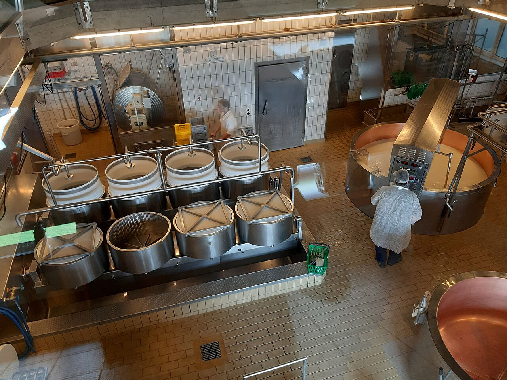

🧀 Беловодск · Чуйская область
Чистые молочные продукты из сердца Чуйской долины
URSUS производит сыр, молоко, масло и сливки в Беловодске — из молока высокогорных пастбищ, по традиционным рецептам.
20+
лет опыта
40+
видов продукции
100%
натуральное молоко
12
регионов поставки
↓ прокрутите — колесо сыра вращается
Каталог
Наша продукция
Свежие сыры, цельное молоко, сливочное масло и сливки — каждый день с нашего завода в Беловодске.

🐄
1 200+литров молока в день
О заводе
Семейный молочный завод в Беловодске
URSUS — это молочный завод в Беловодске, Чуйская область. Мы работаем напрямую с фермерами Чуйской долины и собираем свежее молоко каждое утро.
Сыр выдерживается естественным образом, масло сбивается небольшими партиями, а сливки и молоко проходят бережную обработку — чтобы сохранить настоящий вкус.
Почему URSUS
Качество в каждой упаковке
🌿
Натуральное молокоТолько свежее молоко местных ферм🚫
Без консервантовЧистый состав без добавок👨🍳
Традиционные рецептыПроверенные временем технологии❄️
Свежесть каждый деньДоставка по всему Кыргызстану
Контакты
Свяжитесь с нами
Оптовые поставки, сотрудничество и заказы — мы всегда на связи.
📍
Адресг. Беловодск, Чуйская область, Кыргызстан
📞
Телефон+996 312 00 00 00
✉️
Эл. почтаinfo@ursus.kg
🕒
Часы работыПн–Сб · 9:00–18:00